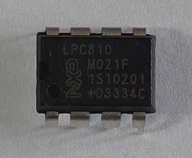
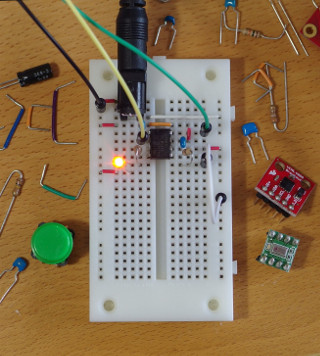

libopenlpc81x/examples/nxp_lpc/lpc81x/lpc810m021fn8/
The LPC810M021FN8 is a 32-bit ARM Cortex-M0+ microcontroller. It can run at a 30 MHz frequency without any external parts. It has the following in an 8-pin DIP package.

- 4 KB flash memory
- 1 KB SRAM
- 8 KB ROM
- Nested Vectored Interrupt Controller (NVIC)
- Switch Matrix (SWM)
- 6 General-Purpose I/Os (GPIO)
- Pin interrupts/pattern match engine
- State Configurable Timer/PWM (SCT)
- Multi-Rate Timer (MRT)
- Window Watchdog Timer (WWDT)
- Self Wake-up Timer (WKT)
- System Tick Timer (SysTick)
- 2 USARTs
- I2C-bus interface
- SPI
- Analog comparator
- Cyclic Redundancy Check (CRC) engine
- Flash controller
- 12 MHz Internal RC oscillator (IRC)
- Programmable watchdog oscillator (9.4 kHz – 2.3 MHz)
- 10 kHz low-power oscillator
- System PLL
I tried some circuits on a small breadboard. The breadboard has 10 columns, 23 rows and 1 power bus - a total of 270 tie points. It is 84 × 45 × 10 mm.

I used a breadboard compatible DC barrel jack (SparkFun PRT-10811) and a 3.3 V 2 A wall mount AC adapter with 2.1 mm barrel plug.
Examples
*** The 4 KB flash memory is too small to use the newlib or newlib-nano C library.
GPIO
- miniblink: Blink an LED.
- fancyblink: Blink two LEDs.
- button: Use a switch to control the blinking of an LED.
- pinint: Count the number of button pushes.
USART
SCT
- sct: Blink two LEDs.
- sct_pwm: Control the fading of an LED with a switch.
- piezo: Play tones on a piezo sounder.
- rc_servo: Control the shaft of a servo motor with a switch.
MRT
- mrt: Blink an LED.
WWDT
- wwdt: Test watchdog reset.
WKT
- wkt: Wake up from deep power-down mode.
SysTick
- systick: Blink an LED.
I2C
- i2c_rom: Write/read a serial EEPROM.
- i2c_proximity: Detect objects with a proximity sensor.
SPI
- spi_rom: Write/read a serial EEPROM.
- spi_barometer: Read a barometer.
Analog comparator
- acmp: Use a potentiometer to fade an LED.
CRC
- crc: Calculate CRCs.
Flash controller
- flashcon: Calculate the flash signatures.
Flash IAP
- flash_iap: Write the flash memory.
ROM API
- rom_api: Read a thermometer.